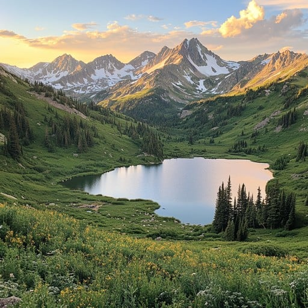

Why I love nature:
- It brings us together
- A source of creativity
- It nourishes us
- Connects us with God
- Diverse elements such as:
- Mountains
- Wildlife
- Oceans
- Sunsets/sunrises
- A sense of peace

There’s something about the outdoors that fills me with a sense of wonder and belonging, like I’m stepping into a world that has been waiting for me all along. Whether it’s the crisp morning air brushing against my face, the golden hues of a setting sun painting the sky, or the rhythmic crash of ocean waves reminding me of life’s endless motion, nature has a way of grounding me, of making me pause and appreciate the simplest yet most profound moments. I love the way towering trees seem to whisper stories of resilience, how rivers carve paths through the earth just as time shapes our own journeys, and the way a quiet breeze carries a kind of peace that no words could fully capture. Being outdoors fuels my creativity, clears my mind, and makes me feel deeply connected to something greater than myself—a history that stretches beyond human existence, a rhythm that has persisted for millennia. There’s adventure in the unknown trails, wisdom in the stillness, and energy in the ever-changing landscapes. The more time I spend outside, the more I realize how much I need it—not just as an escape, but as a reminder of life’s vastness, its beauty, and its ability to refresh the soul. The outdoors isn’t just a place for me; it’s a feeling, an experience, a source of inspiration that never fades.
TABLEAU

Top of Page